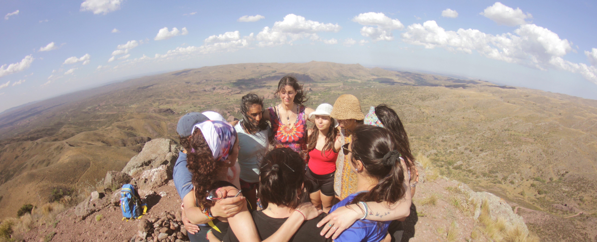

RETIROS EN LA NATURALEZA
Experiencias convivenciales de transformación, conexión espiritual en un entorno totalmente natural y místico
Retiro Pulso Raíz
Este retiro que te invita a conectarte con tu ser, desde un espacio nuevo para habitar el placer y la armonía, usando como guía lo inédito del momento presente. Esta(LA) experiencia profundiza sobre el autocuidado, la escucha, reciprocidad, la confianza, la fortaleza, la unidad, el espíritu de las cosas, también el equilibrio de todos los cuerpos (físico, mental y emocional) y sobre todo la conexión con la naturaleza, honrando la fuerza de la creación Consiste en una convivencia de 3 días y 2 noches, donde realizamos distintas actividades holisticas
Algunas de las actividades que compartiremos serán:
- Yoga y conciencia corporal
- Mindfulness
- Ceremonia de cacao y sanación sonora
- Música medicina
- Círculos de palabra
- Sahumos y limpiezas energéticas
- Rueda de tarot
- Yoga Sacral y liberación de la voz
- Dinámicas de coaching


Lugar: Capilla Del Monte - Córdoba
Consultá por próximas fechas